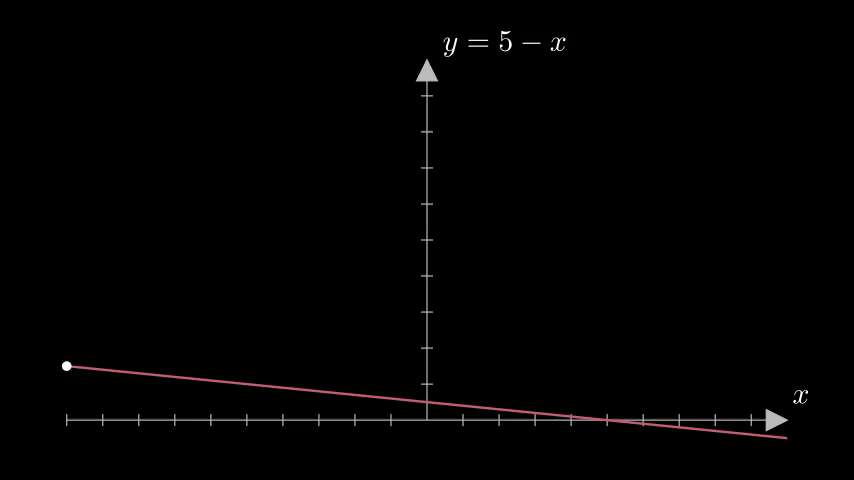
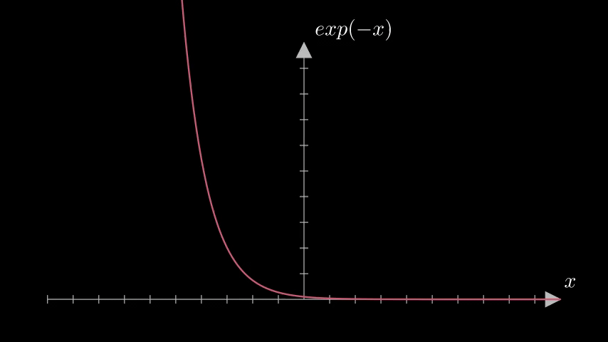

Why model decay using the exponential function?
So you have been going through mathematical models and equations for all sorts of things and everywhere you go you see this equation.
Obviously, you know why it’s used. It is the infamous exponential decay function. But you want to know why specifically this function. What is so special about an exponent that it is used to model decay.
\[e^{-x}\]
In this blog we will learn the following:
- What is a decay function?
- Why use exponentials?
- How does it help us model systems?
Let’s get started with some definitions first.
What is a decay function?
Well in simple english it means to grow old and wither away from existence.
In scientific terms, decay is the process of reducing an amount by a certain measure consistently over a period of time.Let us look at some examples.
\[f(x) = (5-x)\]

In this function, we can see that for all positive values of \[x\] the function decreases from 5. However, if the interval is changed and x starts from 0 and goes till \[-\infty\] then the function starts increasing from 5.
We can play around with lots of definitions and functions to see where a function would be decreasing and where it would be strictly decreasing.
A function would be called strictly decreasing in the rang \[(a,b)\] if
\[x_1,x_2 \in (a,b) : x_1 <x_2 \implies f(x_1) > f(x_2)\]
Why use exponentials?
First, let us understand what kind of data is best modeled by exponentials. The following is a table of some data points.
| x | y |
|---|---|
| 10 | 10 |
| 20 | 20 |
| 30 | 40 |
| 40 | 80 |
Now as we plot this data we can see that it doubles with every iteration, compounding at a constant rate. This rate of compounding is described by \[e^x\].
So we can go as far as to say that exponential is the natural language of growth. Now, what happens when we use this same idea but reverse it.
Again, let us look at a table of data.
| x | y |
|---|---|
| 10 | 10 |
| 20 | 5 |
| 30 | 2.5 |
| 40 | 1.25 |
The graph for this data would be something like this:

This can be modeled by the equation \[y= e^{-x}\]
But why? Why does this equation fit this data so well? To understand this better let us go back to our old friend - rate-of-change.
Now how do we describe decay through calculus? Well, we need to take a quantity \[N\] and another quantity \[x\]. And we need to write how the rate of change of \[N\] varies with the rate of change of \[x\].
\[\frac{dN}{dx}\]
We can say that this rate of change may be something as simple as \[-bN\] where \[b\] is a constant.
\[\frac{dN}{dx} = -bN \\ \]
This equation can be rewritten and solved fairly simply
\[\frac{dN}{N} = -bx \\ ln(N) = -bx+C\]
Solving for the logarithm and ignoring the constant of integration we have
\[N(x) = N_oe^{-bx}\]
Where \[N(x)\] is the current value of \[N\] with respect to \[x\] and \[N_0\] is the initial value or the starting point of \[N\]
How does it help us model systems?
Now we know that the function \[A(x) = A_0e^{-bx}\] can very easily model the process of compounding decay.
The use of this equation in modeling real-world applications is numerous.
- It is particularly useful in modelling a certain kind of decay
- It is easy to determine when the decaying quantity would be half of its original amount. This is commonly known as half-tim.
- The function is also easily differentiable with it’s rate of change being the same as the function itself.
The function \[y= e^{-x}\] is a powerful tool to have in your arsenal. But it is even more powerful when we understand when and where to use it best. Not all systems that decay gradually can be modelled using the exponential decay function, the trick is to use it selectively and use it best.